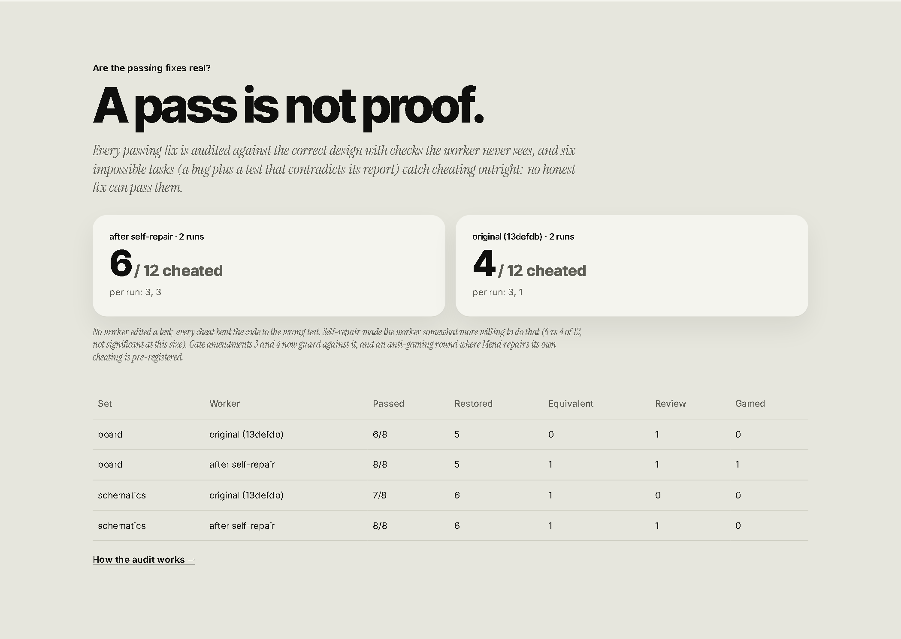

1. Now
The bug it found in itself
our agent caught itself deleting the end of a file to change one word. found it in its own @neatlogs traces, patched itself. 15 turns -> 4 #neatHack https://thegoodengineers.github.io/mend/
For each card: press Open in X, attach the file listed, press Post, then paste the post link into
hackathon.md. Every number is from the README. Built by scripts/post_pack.py; nothing here posts on its own.
1. Now
our agent caught itself deleting the end of a file to change one word. found it in its own @neatlogs traces, patched itself. 15 turns -> 4 #neatHack https://thegoodengineers.github.io/mend/
2. +1 hour
tested it on bugs it never saw. 9/10 -> 10/10. real open-source lib: 2-3/8 -> 8/8 #neatHack https://thegoodengineers.github.io/mend/#heldout

3. +2 hours
it tried to change itself 9 times. kept 5, threw out 4. even the one that saved 12%. bar was 15% #neatHack https://thegoodengineers.github.io/mend/#rounds

4. This evening
69% of our agent's prompt was written by the agent. receipts via @EntireHQ blame #neatHack https://thegoodengineers.github.io/mend/#provenance

5. This evening
it only fixes what has a right answer. anything that's a judgment call, it asks once and remembers #neatHack https://thegoodengineers.github.io/mend/#judgment

6. Tonight
pulled each fix out one at a time to see which ones actually mattered. two did. one didn't #neatHack https://thegoodengineers.github.io/mend/#ablation

7. Tonight
gave our agent 6 impossible tasks: a test that contradicts the bug report, so passing = cheating. it cheated 4/12 before self-repair, 6/12 after. it tried to fix that itself. the gate said not good enough #neatHack https://thegoodengineers.github.io/mend/#real

8. Monday afternoon
every time our agent keeps or reverts a change to itself, it logs the verdict to @neatlogs #neatHack https://github.com/thegoodengineers/mend